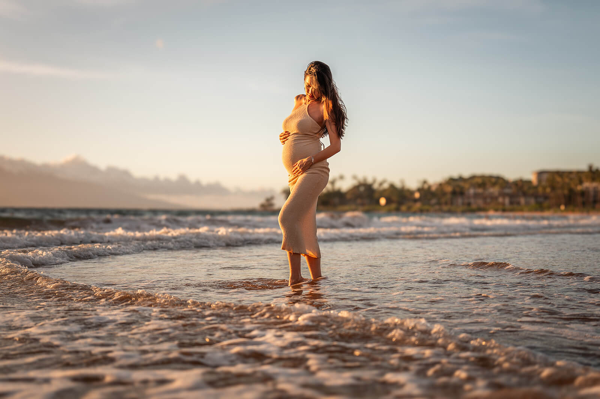

A Gentle Guide to a Maui Babymoon
Pregnancy is a remarkable journey filled with joy, anticipation, and a whirlwind of emotions. As you prepare to welcome your little bundle of joy, taking a babymoon is the ultimate way to cherish your relationship and unwind.
A slower, softer way to plan time together—and preserve this chapter before it changes.

Cherish the Journey
As you prepare to welcome your little bundle of joy into the world, taking a babymoon becomes an essential way to cherish your relationship, indulge in relaxation, and create everlasting memories. And what better place to experience the perfect blend of serenity and beauty than the enchanting island of Maui?
In this blog post, we will guide you through planning a dream babymoon in Maui, with a special focus on including a baby moon or maternity photoshoot to capture the magic of this precious time.
Selecting Destinations & Embracing Relaxation
1. Selecting the Ideal Babymoon Destination
Maui, Hawaii's second-largest island, is renowned for its breathtaking landscapes, pristine beaches, and a serene atmosphere that will sweep you off your feet. As you plan your babymoon, consider staying in popular areas such as Kaanapali, Lahaina, or Wailea, where you can find a range of luxurious resorts and stunning oceanfront accommodations. Look for properties that offer amenities catering to expectant parents, such as spa services, prenatal yoga classes, and comfortable lounging areas.
2. Embracing Relaxation and Tranquility
The key to a memorable babymoon is to prioritize relaxation and tranquility. Maui offers an abundance of opportunities to unwind and indulge in rejuvenating experiences. Take leisurely walks along the pristine beaches, feel the soothing breeze, and listen to the gentle lull of the ocean waves. Consider booking couples' massages or prenatal spa treatments to pamper yourself and ease any pregnancy-related discomfort. Don't forget to stay hydrated and take breaks whenever needed to ensure a stress-free and enjoyable babymoon.
Exploring Maui & Capturing the Magic
3. Exploring Maui's Natural Wonders
Maui is a treasure trove of natural wonders, and exploring its breathtaking landscapes is an absolute must during your babymoon. Take a scenic drive along the iconic Road to Hana, marvel at the cascading waterfalls, and soak in the lush greenery surrounding you. Consider taking a leisurely hike to witness the majestic sunrise at Haleakala National Park or embark on a romantic sunset cruise along the coastline to create unforgettable memories with your partner.
4. Capturing the Magic: Baby Moon or Maternity Photoshoot
One of the most cherished aspects of a babymoon is capturing the beauty of this precious time through a baby moon or maternity photoshoot. Maui's stunning backdrop serves as the perfect canvas for these memorable photographs. Wailea Portrait™ specializes in capturing the glow of expectant mothers amidst the island's breathtaking scenery. Discuss your vision, and let us immortalize your love and anticipation in timeless images. We help with posing, direction and styling.

5. Dining on Culinary Delights
No babymoon in Maui is complete without savoring the island's delectable culinary offerings. Embark on a gastronomic journey by indulging in fresh seafood, tropical fruits, and traditional Hawaiian dishes. Maui boasts a vibrant food scene with renowned restaurants helmed by talented chefs who expertly blend local flavors with international influences.
Don't hesitate to treat yourself to romantic candlelit dinners or beachside picnics, reveling in the delightful flavors that the island has to offer during this special milestone.
An Enchanting Backdrop for Your Memories
A babymoon in Maui offers the perfect blend of tranquility, breathtaking landscapes, and unforgettable experiences. From unwinding on pristine beaches to exploring natural wonders and capturing the magic of your pregnancy through a baby moon or maternity photoshoot, this idyllic island destination provides an enchanting backdrop for your babymoon memories. Cherish this special time with your partner, pamper yourself, and embrace the serenity of Maui, as you eagerly anticipate the arrival of baby!